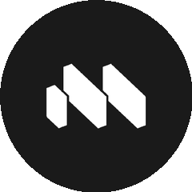

AI 风向标
AI 不瞎编
还能自证清白
答得有凭有据 · 决定留痕可查
#01
AI 工作区
团队协作一站式
macro-inc / macro

邮件聊天文档任务收进一个面板，你们聊过的事 AI 全记得
一站式
AI 共享记忆
Rust 飞快
把碎片工作收进一个盒子
| 00| 25| 50| 75| 99
#02
端侧小模型
手机直接跑 AI 模型
cactus-compute / needle

14MB 的小模型塞进手机手表和机器人，拔掉网线也照常用
14MB 体积
手机能跑
离线可用
塞进口袋的 AI 大脑
#03
本地大模型
自己电脑跑大模型
unslothai / unsloth

自己电脑装个界面就能跑主流大模型，还能调教成专属的
本地运行
免费调教
多模型支持
把 AI 大脑搬回家
100m80m60m40m20m
#04
开源检索引擎
AI 读资料再回答
infiniflow / ragflow
先读你的资料再开口，答得有凭有据，不凭空编
先读资料
答有依据
开源免费
让 AI 不瞎编
#05
决策可溯
让 AI 决策说得清
semantica-agi / semantica

在 AI 底下铺一层图谱，每个决定留痕可查，不再是黑盒
决策可追溯
图谱记忆
自托管
这五个 AI 基建
你最想试哪个？
你最想试哪个？
关注我★下期见